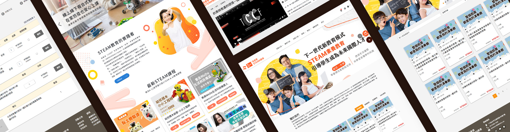
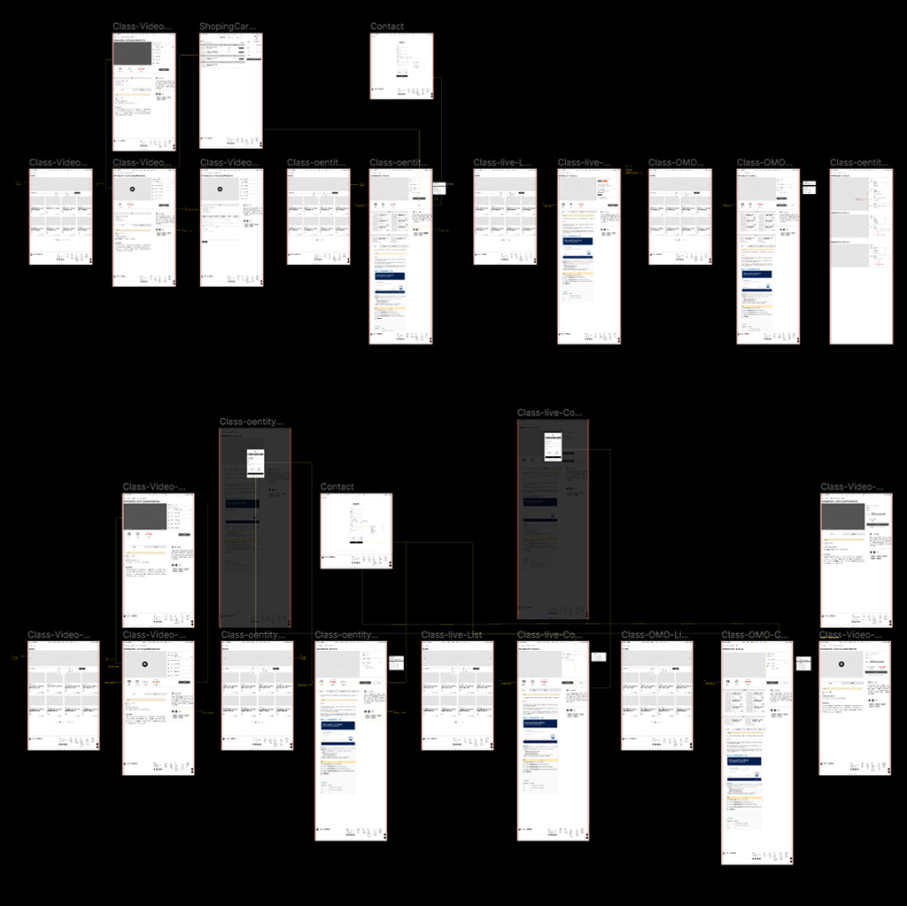
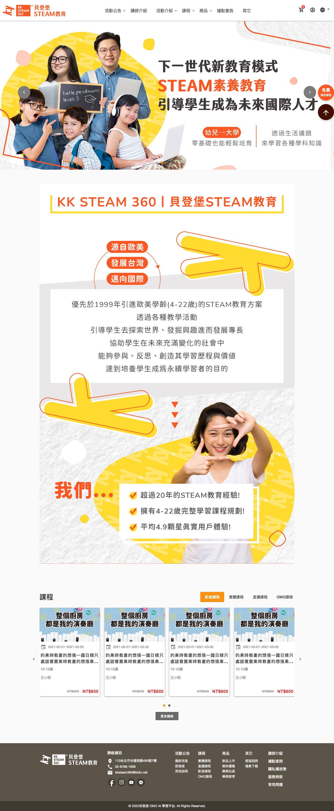

貝登堡steam教育
| 專案時間 | 2021 |
|---|---|
| 專案類型 | 線上教育平台 |
| 使用工具 | Figma、VSCode |
| 裝置 | RWD |
| 專案角色 | 提案設計、參與需求訪談 首頁及內頁版型設計 html切版 |
專案背景
貝登堡是丹麥樂高教育在台灣二十年的合作夥伴，致力於教育用機器人課程、設備與活動， 因為實體課程受到疫情影響無法開課，所以規劃購買線上影片及直播教學，讓孩子不受到時間及空間的限制，透過網路隨時都可以學習．
了解需求
主要客群：門市人員、會員家長．
使用情境：門市人員除了能在門市使用網站，幫家長購買課程及產品之外，
家長也能自行上網購買課程以及線上付款．
設計流程
盤點網站架構，將網站功能初步整理製作wireframe，與案主確認網站操作流程及功能

頁面介紹-第一階段
首頁

首圖Banner
展現最新活動的活動圖輪播
關於我們
以圖文編排介紹教育課程特色
課程
將影音、實體、直播的最新課程顯示於首頁，
提供顧客快速瀏覽最新的課程消息．
右側常駐項-免費領取課程
提供業務人員搜集名單的管道，讓業務人員能
主動為顧客提供課程諮詢．
提供影音課程、實體課程、直播課程線上購買
在設覺設計上，以企業的CI搭配淺灰與白，讓視覺上更簡潔。
活動圖輪播展現最新課程活動．
採用大量的卡片設計，讓課程資訊能夠被整理及收納．
強調一致性的設計，讓網站中的各項元素在不同頁面一致化，在跨裝置上讓
使用者有相對的一致的體驗．